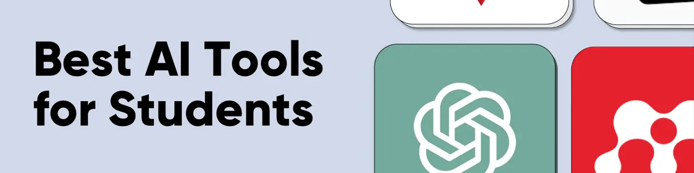

2025 年最適合學生使用的 11 款 AI 工具（已試用和測試）
人工智能正在迅速融入教育領域，徹底改變學生的學習方式和學校的教學方式。數字教育委員會的一項全球調查顯示，
然而，由於市面上有如此多的人工智能學習工具，每個工具的功能、用戶體驗和目標受衆各不相同，學生往往難以選擇合適的工具，有時會誤用或浪費時間。
本文根據實踐經驗，選取了12款適合學生的AI學習工具，探討了它們在學習中的作用和價值，並詳細介紹了選擇AI工具時需要考慮的關鍵因素。
人工智能工具如何改變教育
人工智能工具的廣泛應用正在推動教育朝着更精準、個性化的學習方式發展——從簡單的"被動工具"演變爲真正的"學習夥伴"。它們的價值在三個關鍵領域最爲明顯：
個性化： 根據個人需求靈活調整學習方法。即時反饋： 一旦發現誤解，立即糾正。效率： 自動化評分和數據分析等任務，讓老師和學生有更多時間專注于思考和創造。
與此同時，人工智能工具正在提高
需要注意的是，這並不意味着取代傳統教學。AI
AI工具的使命是讓學習更加個性化、高效化，同時激發更大的探索和創造的可能性。
哪些類型的人工智能工具適合學生
根據這些優勢和作用，適合學生使用的AI工具一般可以分爲三類：
智能學習分析系統： 這些系統使用算法分析學習行爲和數據，識別學習薄弱環節，並幫助規劃個性化學習路徑。例如，松鼠AI可以精準定位具體的知識缺口並提供有針對性的練習，而世紀科技可以生成動態學習計劃並實時調整學習內容。智能導師和學習平臺： 作爲全天候學習助手，它們會根據學生的掌握程度調整內容和教學策略。像 Khanmigo 和 Education Perfect 這樣的平臺會通過對話和反饋來指導學生，幫助他們更深入地理解關鍵概念。寫作和研究助手： 專爲學術寫作和資源管理而設計，例如 Grammarly（語言優化）、Mendeley（參考文獻管理）和 ChatGPT（創意生成和寫作）。這些工具幫助學生擺脫格式設置和資訊檢索等重複性任務，從而騰出更多時間進行思考和發揮創造力。
除此之外，人工智能工具正在擴展到新的領域：
展望未來，人工智能工具將繼續推動學習效率和個性化的提升——這是以下章節介紹的 12 種優秀工具的共同目標。
我們如何爲學生選擇最佳的人工智能工具
爲了確保我們建議的質量和實用性，我們根據三個關鍵標準通過嚴格的篩選和測試流程來評估人工智能工具：
實用性
該工具必須真正解決學生的學習難題，並顯著提高學習效率。在測試過程中，我會模擬真實的學習場景——例如寫作論文、文獻檢索和做筆記——以確保每個推薦的工具都能在關鍵時刻發揮真正的價值，而不是成爲華而不實卻毫無用處的噱頭。
易於使用
學生時間有限，課業繁重，因此 AI 工具應該減輕他們的負擔，而不是增加複雜性。
在我的測試中，我特別注重操作效率和流暢度，確保學生可以更加專注於學習本身，而不是苦苦思索如何使用工具。
成本
在預算有限的情況下，價格和性價比是重要的考慮因素。我會優先考慮那些免費版本能夠滿足基本需求的工具。對於付費工具，我會仔細評估其性價比以及是否提供
無論功能多麼強大，價格過高的工具都不會入選。我的目標是幫助學生找到既高效又實惠的AI助手。
1. Grammarly：寫作和語法優化

Grammarly 是一款人工智能寫作助手，可以立即檢測和糾正語法、拼寫和標點符號錯誤，同時還提供詞彙增強、句子結構改進和語氣調整。
它適用於廣泛的寫作環境 - 例如論文、實驗報告和演講 - 使你的內容在結構和語言上更加精確、合乎邏輯和流暢。
免費版本涵蓋基本的語法檢查，而高級版本則增加了高級語法建議、風格改進和抄襲檢測。
定價和學生折扣
- 每月：30美元/月
- 年度：144 美元/年（約 12 美元/月）
- 學生折扣：通過 UNiDAYS 可
享受 25% 折扣；通過 Student Beans 可享受 20% 折扣
2. Copyscape：AI抄襲檢測

Copyscape 是一款專業的
結果突出顯示匹配的部分幷包含原始來源的鏈接，使學生更容易修改和正確引用。
Copyscape 採用按次付費的定價模式，
優點
- 支持多種文檔格式上傳
- 提供帶有源鏈接的詳細相似性報告
- 簡潔、用戶友好的界面
缺點
- 對專業術語不太敏感
- 不提供實時檢查
3. Mendeley：人工智能文獻管理

Mendeley 是一個綜合性的
學生可以直接在 Word 或 LaTeX 中插入引文，系統會自動生成 APA、MLA 和 Chicago 等各種學術風格的參考文獻列表。
免費版提供
優點
- 雲端同步，多設備訪問
- 實現與其他研究人員的合作
- 與 Microsoft Word 等寫作軟件緊密集成
缺點
- 移動設備上的功能有限
- 從 PDF 中提取元數據並不總是準確的
定價和學生折扣
- 每月加價計劃：5 美元/月
- 加上年度計劃：每年 55 美元
- 學生折扣：部分大學與愛思唯爾合作，提供
Mendeley 機構版 ，可免費升級至更大存儲空間和高級協作功能。資格需與大學圖書館確認。
4. Research Rabbit：AI學術搜索

除了使用 Mendeley 管理參考文獻之外，研究中的另一個關鍵步驟是探索新的學術發現 —— 而 Research Rabbit 是實現這一目的的絕佳工具。
這款由人工智能驅動的文獻發現工具不僅可以幫助學生快速找到相關論文，還可以呈現可視化網絡圖，揭示研究主題、作者合作和引用鏈，讓你一目瞭然地掌握某個領域的全貌及其當前發展。
目前，Research Rabbit 的所有功能
優點
- 完全免費，無限制訪問
- 推薦相關論文的準確性高
- 支持協作收藏和共享
缺點
- 主要涵蓋英語文學
- 有限的高級搜索選項
5. Wolfram Alpha：計算和知識問答

對於STEM 學生來說，Wolfram Alpha 是一款不可或缺的 AI 計算和解決問題工具。它涵蓋數學、物理、化學、生物、工程和經濟學等多個學科。只需輸入查詢，系統就會提供詳細的分步解決方案、可視化效果和相關知識點。
通常需要花費大量時間的任務（例如求解微分方程、分析統計數據或查找科學常數）可以在幾秒鐘內完成，並獲得準確而全面的結果。
免費版本涵蓋基本查詢，而專業版則解鎖了逐步推導、檔案上傳和數據分析等高級功能，使複雜的學術計算變得簡單直觀。
優點
- 強大的數學計算和符號代數能力
- 來自權威來源的可靠數據
- 提供詳細的解決步驟和可視化圖表
缺點
- 對複雜自然語言問題的理解有限
- 界面對於新用戶來說可能具有挑戰性
定價和學生折扣
- 專業版：每月 8.25 美元或每年 99 美元
- 學生折扣：學生專業版 5 美元/月（需要在官方網站進行學生驗證）
6. MindMeister：協作思維導圖

MindMeister 是一款
它還支持多種導出格式，包括
免費版本最多允許三張思維導圖，而付費版本則提供無限張思維導圖並解鎖高級主題樣式。
優點
- 實時協作和團隊共享
- 多種模板和定製選項
- 與其他生產力工具的緊密集成
缺點
- 有限的離線功能
- 免費計劃有重大限制
定價和學生折扣
- 個人：6.99 美元/月
- 專業版：每月 10.49 美元
- 學生折扣：Edu Personal 2.50 美元/月，Edu Pro 4.13 美元/月（需在官網進行學生驗證）
7. Microsoft Sway：動態演示

Sway 是
Sway 支持從 OneDrive、YouTube 和社交媒體導入內容，還可以實現實時協作進行羣組編輯和反饋。
免費版本提供基本的創建和共享功能，而付費計劃則解鎖更大的雲存儲、自定義樣式、密碼保護和其他高級選項。
優點
- 適合學術演示的現代、美觀的模板
- 與Office 365 生態系統無縫集成
- 支持嵌入多媒體內容
- 響應式設計，可在任何設備上實現最佳觀看效果
缺點
- 依賴於微軟生態系統
- 不支持離線編輯
定價和學生折扣
- Microsoft 365 個人版：每月 6.99 美元或每年 69.99 美元
- 學生折扣：經微軟認證爲教育機構的機構的學生和教師可以免費訪問 Microsoft 365 教育版，其功能與個人計劃幾乎相同。
8. Notion：AI筆記和項目管理

你想在一個平臺上管理課堂筆記、作業和項目計劃嗎？Notion 是一款集筆記、數據庫、任務管理和協作功能於一體的一體化工具。
免費套餐包含無限頁面和區塊、共享頁面（最多 10 位訪客）以及檔案上傳（單個檔案 ≤ 5MB）。付費套餐則可解鎖無限檔案上傳、更高的訪客限制（最多 100 位訪客）以及版本歷史記錄（最多 30 天）。
優點
- 筆記、任務和數據庫的一體化平臺
- 高度可定製的佈局和模板
- 功能豐富的免費版本
缺點
- 學習曲線陡峭；新用戶需要時間適應
- AI 功能需要付費訂閱
定價和學生折扣
- 升級計劃：每月 10 美元
- 學生折扣：使用有效的學術電子郵件即可免費獲得 Plus 功能
9. Gradescope：自動作業和考試評分

Gradescope 是一個 AI 評分平臺，支持手寫題目、多項選擇題測試、編程作業等多種評分方式。它可以自動識別紙質和電子版作業，批量應用評分標準，並提供詳細的分析和反饋，幫助學生清楚地瞭解錯誤和需要改進的地方。
免費試用版提供基本的評分功能，付費版則可解鎖 AI 自動評分、答題卡掃描和其他協作工具。該平臺不直接向學生收費——學校通常會購買許可證，以便學生免費使用。
優點
- 支持手寫和數字提交
- 人工智能輔助評分提高效率
- 詳細的分析和反饋
缺點
- 需要機構許可證（非學生購買）
- 某些科目的自動評分準確度有限
10. Otter.ai：AI語音轉錄

在冗長的課堂或講座中，逐字逐句地記錄筆記幾乎是不可能的。Otter.ai 旨在解決這個問題——它是一款實時語音轉文本工具，支持
它可以識別不同的發言者，生成可搜索的文字記錄，並提供關鍵詞提取和會議摘要功能，幫助學生快速回顧和整理重要內容。它尤其適用於錄製課程、講座、學術會議和小組討論。
免費計劃每月提供
優點
- 支持多說話人識別和標記
- 與 Zoom、Teams 和其他平臺集成
- 提供學生折扣和教育版
- 支持關鍵字搜索和筆記整理
缺點
- 在嘈雜的環境中或口音濃重時準確率較低
- 主要支持英語；其他語言支持有限
定價和學生折扣
專業版：每月 16.99 美元或每年 99.99 美元
學生折扣：使用有效的 .edu 電子郵件，Pro 可享受 20% 折扣——約 13.59 美元/月或 79.99 美元/年
11. ChatGPT：一體化人工智能助手

ChatGPT 作爲當今使用最廣泛的 AI 對話工具之一，已成爲許多學生的學習夥伴。它
學生可以用它來解釋複雜的概念、檢查語法、總結學術論文或獲得個性化的學習建議。
優點
- 強大的語言理解和生成能力
- 支持多種任務，例如寫作、編碼和解決數學問題
- 持續更新和改進，擴展功能
缺點
- 可能會生成不準確或過時的資訊
- 免費計劃在高峯時段可能會很慢
定價和學生折扣
- 另加：20 美元/月
- 專業版：200 美元/月
爲學生選擇合適的人工智能工具
市面上有很多推薦的 AI 學習工具，但找到真正符合你需求的工具需要仔細選擇和判斷。選擇時，你可以從以下三個方面進行評估：
有效性和可靠性 ：首先明確你想要解決的問題——無論是提高論文質量、優化問題解決能力，還是獲得更個性化的輔導。選擇功能與你的目標相符的工具，並確保它們保持穩定，並在不同情況下提供可靠的結果。安全性 ：保護個人數據和學習資料應是首要任務。選擇隱私政策透明且符合相關法規的人工智能工具。確保檔案傳輸和存儲過程加密，以防止個人資訊被濫用。理解能力與侷限性 ：每種人工智能工具都有其侷限性。它可能並非總是掌握最新的知識，並且可能在特定領域或複雜推理中表現出偏見。保持判斷力，手動驗證重要結論，並將人工智能視爲助手而非唯一依賴。
基於這些標準，我強烈推薦在環球巴士拼車AI工具，它集成了ChatGPT、Claude、Perplexity等主流模型於一體，讓用戶可以自由切換，同時保證輸出的穩定性。
從我自己的使用中，我注意到它對數據傳輸和隱私保護採取了謹慎的方法——對話不會長期存儲，檔案傳輸是加密的，這使得它比許多類似的工具更值得信賴。
同時，不同的模型各有優勢：切換到 Claude 進行更強大的推理，或者使用 ChatGPT 快速生成內容。這種靈活性完美地彌補了依賴單一工具的侷限性。
結論：人工智能教育趨勢與行動
人工智能在教育領域的應用不斷拓展，主要呈現三大趨勢：
面對這些變化，學生不僅要學習如何使用人工智能工具，還要了解其基本原理、侷限性以及如何在保持批判性思維的同時與它們合作。
這種"
常見問題解答
最適合學生的 AI 聊天工具是什麼？
對於學生來說，ChatGPT 是一個絕佳的選擇。它新發布的GPT5.2模型不僅可以回答編程和日常問題問題，還能輔助寫作、研究和創意任務，功能全面，性價比高。
人工智能如何幫助大學生？
人工智能可以通過快速檢索資訊、生成學習筆記、分析數據、提升寫作表達能力等方式，幫助大學生提升學習效率和科研質量，並提供個性化學習建議，幫助學生更好地掌握課程內容，培養解決問題的能力。
最適合學術工作的人工智能是什麼？
最適合學術工作的AI是Research Rabbit。它可以幫助學生高效地發現、整理和追蹤相關文獻。除了支持可視化引用網絡外，它還能根據你的研究主題推薦新資料，尤其適合撰寫論文和進行深入的學術研究。